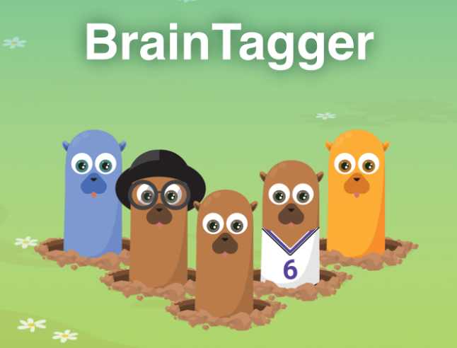

BrainTagger
2019 – 2026Researcher → Project Manager → Product Manager · Centivizer, Toronto
A cognitive-assessment game built on a Whack-A-Mole paradigm for the early detection of cognitive decline and Alzheimer's. I grew it from a research prototype into a consumer subscription platform.
- 1,500+users
- 25releases
- 11publications
- 1,000+study participants
-
Discover
A 6-week study (N=16) revealed engagement and performance decayed across sessions — exposing longitudinal motivation as the core unsolved gap.
-
Validate
Designed and tested four reward conditions (N=442): a leaderboard lifted enjoyment 25% over baseline; self-comparison drove the most stable performance over time (ICC up to 0.96).
-
Ship
Launched a free/premium subscription dashboard built around the winning reward system; shipped a universal version that scaled to 1,500+ users.
-
Iterate
Evolved five game skins — Whack-A-Mole → Gardening → Poker → Alchemy → Word-matching — each driven by annual user testing (N≈110) to widen appeal.
Related research
- Add a publication citation here → link to the paper.
- Add a publication citation here → link to the paper.